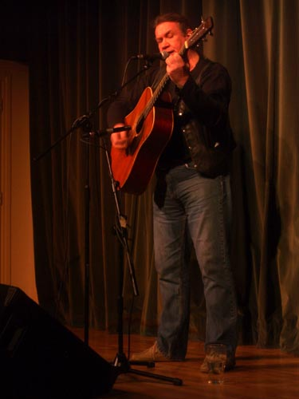

first on were these two lads - freddie smyth and unnamed friend - oh that was nice - all so young and delicate - little wriggling celtic jazzy rhythms - a funny expression like sucking his teeth as he steered the bow across the fiddle - and shared smiles as the tune lurched and twisted

the man himself by contrast was all beefy blustering and objecting - rambling - bellowing - the old grumbling revolutionary generation - no hippy but a lefty - a working man's man - big grey hands like a plasterer - that grabbed and thrashed the guitar like repairing a fence - but in presenting himself as the eternal troubadour of conscience there was something deeply tragic - something that said we were all doomed to futile struggle and obsolescence - no amount of resilient stubborn energy will save us - during the encore a string snapped - whacking out like a demon - he fought on to the end
- noosnomis
2005-11-28 02:27
do you think the older we grow, the more tragic and hopeless circumstances present themselves to us?- deathinvenice
2005-12-07 11:20
the more i tour the quaker meetings the more i keep wondering what are people - in a roomful of good considerate openminded concerned committed spiritual folk one still wonders what are people - in my own mind i have deprecated hairsplitting in favour of social skills
with the boys it was a casual affair - unconnected with rent - they exuded their own enjoyment - the old guy had been slogging it out in one night stands across the land - to make ends meet
in retrospect the awkwardness fades - the grandeur remains - this is what he called the most beautiful song i know - now westlin winds by robbie burns
i vote for beauty - how could the ephemeral ever become bitter- noosnomis
2005-12-07 01:33
you know, i always wonder if my search for beauty is a form of vampirisim.
- noosnomis
- deathinvenice